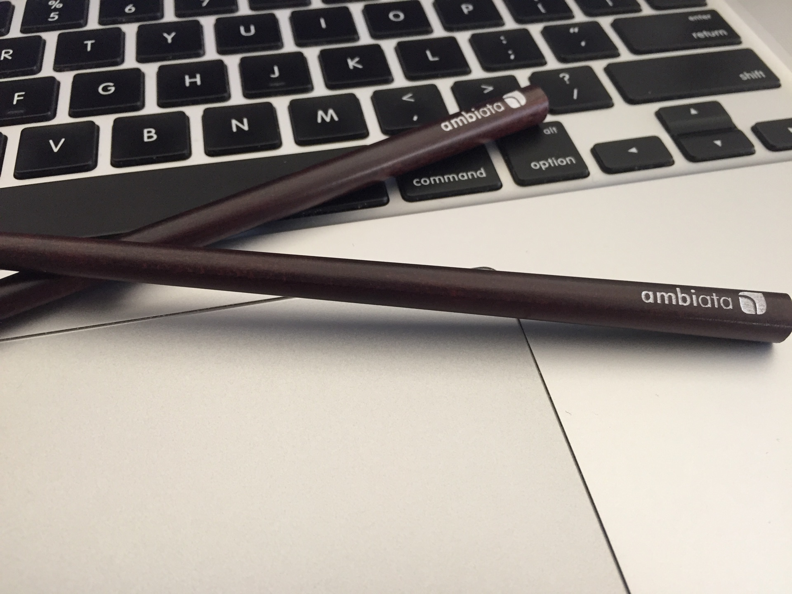

name: image layout: true class: center, middle, image --- name: image-white layout: true class: center, middle, image, image-white --- name: image-last layout: true class: center, middle, image, image-last --- name: ambiata layout: true class: ambiata --- name: ambiata-full layout: true class: center, middle, ambiata-full --- name: code-small layout: true class: code-small --- name: question layout: true class: center, middle, question --- name: rule layout: true class: center, middle, rule --- name: boom layout: true class: boom --- name: inverse layout: true class: center, middle, inverse --- class: center, middle template: image # Life Without Stack Traces --- layout: false template: image  # Charles O'Farrell --- layout: false ## In The Beginning... There was the checked exception --- ## Hate - http://literatejava.com/exceptions/checked-exceptions-javas-biggest-mistake/ - http://googletesting.blogspot.ru/2009/09/checked-exceptions-i-love-you-but-you.html --- ## Bad APIs ```java void bytesToString(byte[] bytes) { ByteArrayOutputStream out = new ByteArrayOutputStream(); try { out.write(bytes); out.close() return out.toSring(); } catch (IOException e) { // This can never happen! // Should I rethrow? Eat it? Print Error? } } ``` --- ## Tea Leaves ``` java.lang.NullPointerException at com.example.MyService.list() at com.example.MyController.list() ``` --- --- ## In Reality ``` java.lang.NullPointerException at com.example.MyService.list() at net.sf.cglib.proxy.MethodProxy.invoke() at org.springframework.aop.framework.Cglib2AopProxy$CglibMethodInvocation.invokeJoinpoint() at org.springframework.aop.framework.ReflectiveMethodInvocation.proceed() at org.springframework.aop.aspectj.MethodInvocationProceedingJoinPoint.proceed() at com.blogspot.nurkiewicz.LoggingAspect.logging() at sun.reflect.NativeMethodAccessorImpl.invoke0() at sun.reflect.NativeMethodAccessorImpl.invoke() at sun.reflect.DelegatingMethodAccessorImpl.invoke() at java.lang.reflect.Method.invoke() at org.springframework.aop.aspectj.AbstractAspectJAdvice.invokeAdviceMethodWithGivenArgs() at org.springframework.aop.aspectj.AbstractAspectJAdvice.invokeAdviceMethod() at org.springframework.aop.aspectj.AspectJAroundAdvice.invoke() at org.springframework.aop.framework.ReflectiveMethodInvocation.proceed() at org.springframework.aop.interceptor.AbstractTraceInterceptor.invoke() at org.springframework.aop.framework.ReflectiveMethodInvocation.proceed() at org.springframework.transaction.interceptor.TransactionInterceptor.invoke() at org.springframework.aop.framework.ReflectiveMethodInvocation.proceed() at org.springframework.aop.interceptor.ExposeInvocationInterceptor.invoke() at org.springframework.aop.framework.ReflectiveMethodInvocation.proceed() at org.springframework.aop.framework.Cglib2AopProxy$DynamicAdvisedInterceptor.intercept() at com.example.MyController.list() ``` --- ## Exceptions don't compose - TODO BETTER EXAMPLE - http://benjiweber.co.uk/blog/2014/03/22/checked-exceptions-and-streams/ ```java void duplicatesShortStrings(input: String) throws CheckedException asList("foo", "bar", "baz", "booooo") .stream() .map(Example::duplicatesShortStrings) .collect(Collectors.toList()); ``` --- template: question ## Partial Functions --- ## Just say no ```scala def safeFunction(): String = { val v: Option[String] = ... // This should never happen... v.get } ``` - BOOM! - TODO Show what that looks like --- template: inverse # FP --- ``` def load(id: Int): Future[List[Foo]] = for { u <- loadUser(id) b <- loadFoo(u) } yield b ``` - TODO - What does the stacktrace look like? - Oh no! --- ## TODO ``` java.lang.NullPointerException at com.example.MyService.loadFoo() at org.scala.Future.flatMap() at org.scala.Future.flatMap() at org.scala.Future.flatMap() at org.scala.Future.flatMap() ``` --- ## TODO TITLE ```scala case class UserNotFound(id: Int) extends Exception def load(id: Int): UserNotFound \/ User case class FooNotFound(id: Int) extends Exception def load2(id: Int): FooNotFound \/ List[Foo] ``` --- ## Simple example ```scala def foo: Exception \/ User def bar: Exception \/ List[Foo] def load(id: Int): Exception \/ List[Foo] = for { u <- loadUser(id) b <- loadFoo(u) } yield b ``` --- template: question ## This is _not_ a Monad tutorial --- ## What now? ```scala load(id) match { case -\/(e) => // What do we know about e?!? println("Something bad happend: " + e.toString) } ``` --- ## Types Are Good ```scala case class UserNotFound(id: Int) def load(id: Int): UserNotFound \/ User case class FooNotFound(id: Int) def load2(id: Int): FooNotFound \/ List[Foo] ``` --- ## Hmmm ```scala def load(id: Int): ??? \/ List[Foo] = for { u <- loadUser(id) b <- loadFoo(u) } yield b ``` --- ## ADT ```scala sealed trait LoadError case class LoadErrorUser(e: UserNotFound) extends LoadError case class LoadErrorFoo(e: FooNotFound) extends LoadError ``` --- ## Hmmm ```scala def load(id: Int): LoadError \/ List[Foo] = for { u <- loadUser(id).leftMap(LoadErrorUser(_)) b <- loadFoo(u).leftMap(LoadErrorFoo(_)) } yield b ``` --- ## Catch ```scala load(id) match { case -\/(e) => e match { case LoadErrorUser(u) => loadSomethingElse(e) case LoadErrorFoo(f) AnotherError(f).left } } ``` --- ## "Logical" stack trace ``` Something failed with "/bob/1" - Load failed with: - User not found: "bob" ``` --- ## What now? ```scala def foo: Future[Exception \/ User] def bar: Future[Exception \/ List[Foo]] def load(id: Int): Future[Exception \/ List[Foo]] = for { u <- loadUser(id) b <- u match { case -\/(e) => Future.ok(-\/(e)) case \/-(u2) => loadFoo(u2) } } yield b ``` --- ## EitherT ``` case class EitherT[F[_], L, R](run: F[L \/ R]) EitherT[Future, Exception, A] = Future[Exception \/ A] ``` --- ## EitherT ```scala def foo: EitherT[Future, Exception, User] def bar: EitherT[Future, Exception, List[Foo]] def load(id: Int): EitherT[Future, Exception List[Foo]] = for { u <- loadUser(id) b <- loadFoo(u2) } yield b load(id).run > res0: Future[Exception \/ List[Foo]] ``` NOTES: Probably should use Task, the problem/confusing thing with Future is it has Throwable --- ## Resources - _Functional Programming in Scala_ by Paul Chiusano and Rúnar Bjarnason - Chapter 4: “Handling errors without exceptions” - _Designing Fail Fast Error Handling_ by Noel Welsh - http://underscore.io/blog/posts/2015/02/23/designing-fail-fast-error-handling.html